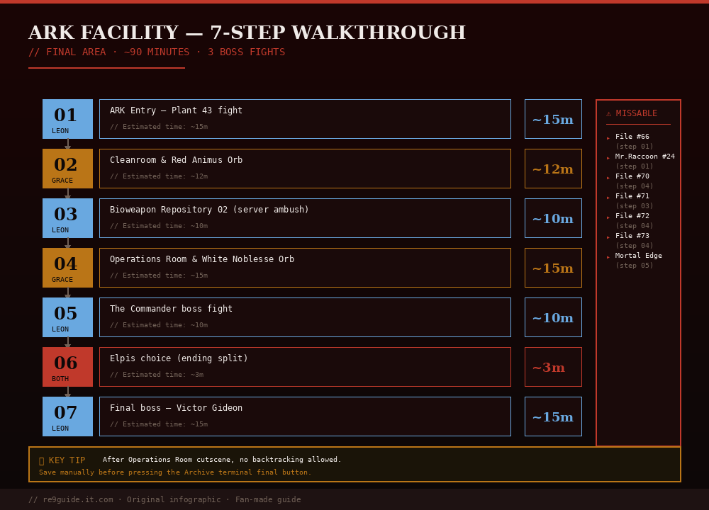

PUBLISHED MAY 2026 · 15 MIN READ · ENDGAME WALKTHROUGH
EDITOR:Jachin (Seoul)
GAME VERSION:v1.02 (May 2026 patch)
LAST VERIFIED:2026-05-11
PLATFORM TESTED:PS5 / Steam
The ARK Facility is the 10th and final area of Resident Evil Requiem. This step-by-step walkthrough covers every room, key item, puzzle, and boss from your entry through the decontamination tunnel to the final escape — for both Leon and Grace sections.

Fig 1. Complete 7-step ARK Facility flowchart. Total estimated time ~80 minutes. Several missable items (Files #66, #70-73, Mortal Edge) require specific step actions.
⚠ Point of No Return: Once you reach the Operations Room ending cutscene, you cannot return to earlier areas. Save manually before the elevator if you haven't 100% completed Raccoon City collectibles. The Insanity-mode save you create here is also your best speedrun checkpoint.
The ARK is where Resident Evil Requiem stops being generous. Resources are tight, enemy density is high (Lickers + zombies + elite guards), and three major boss fights happen back-to-back. Failing to prep before entering will turn this 90-minute section into a 4-hour death march.
Bottles of Acid: 2-3 (one-shots Lickers — critical for Grace's section)
Med Injectors: 4+ for combined Leon and Grace runs
Mortal Edge Hatchet: Must already be acquired (see Commander guide)
💡 Pre-ARK checklist: Visit the Parlor as Grace to spend remaining Antique Coins on the Hip Pouch (+inventory slots) and Magnum AOR upgrades. After this, the parlor will be inaccessible.
STEP 01Leon — ARK Entry (Plant 43 boss)
The ARK Facility begins immediately after you enter through the decontamination tunnel as Leon. Plant 43 attacks you at the entrance courtyard — see our dedicated Plant 43 Boss Guide for the full strategy.
Decontamination tunnel
After the cutscene, walk forward. Mr. Raccoon #24 is in the corridor on your right behind some boxes — easy to miss. Save at the typewriter past the green door before progressing.
File #66 — N0-AH Status Report
In the save room past the green door. Inspect the monitor on the wall. This file is automatic if you read it before leaving.
Plant 43 boss fight
Three-headed plant boss. Shoot the explosive canisters around the arena for cinematic finisher damage. See the dedicated boss guide for weak points and Insanity tips.
STEP 02Grace — Cleanroom & Red Animus Orb
After Plant 43, control switches to Grace for the puzzle-heavy mid-section. The ARK has a major puzzle requiring two orbs: the Red Animus Orb and the White Noblesse Orb. You need both to open the door to the Operations Room.
Stock Room → Staff Room shortcut
After the elite guards encounter, leave the Stock Room and take the stairs on the left. Unlock the door at the top to create a shortcut back to the Staff Room (save point). Use this for fast travel.
Bioweapon Repository 02 — Cleanroom
Backtrack to Bioweapon Repository 02. Bottles of Acid one-shot Lickers, Molotovs one-shot zombies — use these liberally. The Red Animus Orb is in a chest at the back of the Cleanroom. A Molotov Cocktail sits on a bed nearby.
File #70 — Access Log: 51st Assembly Minutes
In the Monitor Control Room — use the Magnetic Key on the red door near the upstairs typewriter. ⚠ MISSABLE — not accessible after Operations Room cutscene.
STEP 03Leon — Bioweapon Repository 02 (parallel)
Brief Leon section running parallel to Grace's puzzle progression. Most of his work is enemy combat to clear Grace's path.
Server room ambush
After triggering the computer cutscene, return through the server room — lights cut out and 4 armored enemies enter from the far door. Have a grenade ready: throw it at the doorway the moment they appear to one-shot the wave. If you miss, fall back to the corridor entrance to funnel them.
File #71 — Sterilization Chamber Safe
In the anteroom before Bioweapon Repository 05, on a crate. ⚠ MISSABLE.
STEP 04Grace — Operations Room & White Noblesse Orb
The puzzle-heavy core of the ARK. Both orbs converge here.
Bioweapon Repository 05
Heavily defended room. Lickers + zombies. You can stealth through with Hemolytic Injectors and Bottles of Acid if conserving ammo, but combat is likely. The White Noblesse Orb is in a chest at the back of the Operations Room (up the stairs after clearing the floor).
File #72 — Monitor Control Room Safe
In the rightmost open container of the middle row in Bioweapon Repository 05. ⚠ MISSABLE.
Recessed Panel Puzzle (Animus + Noblesse)
Place both orbs in the recessed panel. The solution involves rotating both orbs simultaneously until both glyphs align with the central socket. See our puzzle solutions guide for the exact rotation pattern.
File #73 — Access Log: First Assembly Minutes
In the Archives — on the last monitor on the right wall. Read BEFORE touching the big console at the end of the room (that interaction ends the area). ⚠ MISSABLE. Use the Grace-switch trick if you accidentally interact first (see All 75 Files guide).
STEP 05Leon — The Commander boss fight
The Commander (HUNK-type boss) fights you on a circular platform in the ARK central chamber. He's a parry-focused fight — your Mortal Edge Hatchet does most of the work.
Strategy summary
Parry his melee attacks with the Hatchet, then follow up with 2 swings before he retreats. Hemolytic Injectors instant-kill if you have 3+ remaining. Stay close — his ranged shots are harder to defend than melee.
Reward: Mortal Edge upgrade
Defeating The Commander rewards the Mortal Edge specifications (File #69 — automatic) and upgrades your Hatchet to its strongest form. This is required for Victor Gideon Phase 2.
See the dedicated Commander boss guide for parry timing details and Insanity strategies.
STEP 06The Elpis choice (ending split)
After The Commander fight and Grace's Operations Room sequence, Grace meets Leon at the central elevator. A cutscene plays, then you face the most important choice in the game.
⚠ Choice impacts ending + trophies:
• "Destroy Elpis" → BAD ENDING. Game ends immediately, no Victor fight. Does count for Insanity completion. Does NOT count for Speedrunner trophy.
• "Release Elpis" → TRUE ENDING. Progresses to final Victor Gideon boss fight. Unlocks Hope and Requiem trophies, plus required for Speedrun and Platinum.
💡 Tip: If you want both endings, pick Destroy Elpis first. The game will prompt you to reload after credits to pick the other option. This saves a full playthrough.
STEP 07Final boss — Victor Gideon
The two-phase final boss fight as Leon. Phase 1 is human form (similar to a Tyrant fight); Phase 2 is the mutated form with tentacle attacks and the glowing chest core.
Phase 1 — Human form
Walk-around fight. Parry with the Mortal Edge Hatchet, then unload Requiem rounds on his head. The RPG-7 (if you have one) deals massive damage. Avoid his electric attack.
Phase 2 — Mutated form
The chest core glows orange — this is the only damage spot. Charged Requiem shots deal devastating damage. Community tip from v1.02: the shotgun from the nearby armory instantly pops the Phase 2 weak points if you grab it before the fight starts. Many players report 1-shotting Phase 2 with the RPG-7 that spawns at the start.
✅ End of game. Beating Victor unlocks the "Requiem" trophy plus the Speedrunner check if completed under 4 hours total. NG+ unlocks immediately with all weapons and CP carried over.
See the full Victor Gideon Boss Guide for detailed attack patterns and Insanity-mode strategies.
Insanity-mode tips & speedrun notes
// INSANITY-SPECIFIC TIPS
Bioweapon Repository 05 stealth: Hemolytic Injectors deal full damage even on Insanity. Save 4-5 for this room to bypass combat entirely.
Server room ambush: Pre-throw a grenade at the doorway timing. Even on Insanity, this still works to clear the wave.
Commander fight: Has a 30% damage scaling on Insanity. Parry-only strategy still viable, but Hemolytic Injectors save 2+ minutes.
Victor Phase 1: RPG-7 deals enough damage to skip Phase 1 entirely on Insanity if you preserved both rockets.
Victor Phase 2: Infinite Requiem (purchased with 6,000 CP) trivializes this phase — charged shots stagger him repeatedly.
// SPEEDRUN ROUTE NOTES
Skip File #70 — not required for any speedrun trophy
Skip Mr. Raccoon #24 if not on 100% run
Rush the Animus Orb → place immediately
Stealth through Bioweapon Repository 05 with Hemolytic
Use RPG-7 on Commander for instant skip
Pick "Release Elpis" — Speedrunner trophy requires the true ending
RPG-7 the entirety of Victor if you saved one
Optimal ARK section time on Insanity with Infinite Ammo: ~22-28 minutes. See Sub-4-Hour Speedrun Guide for full route.
If this guide helped, consider supporting more guides like this on Ko-fi. Every little bit means the world.